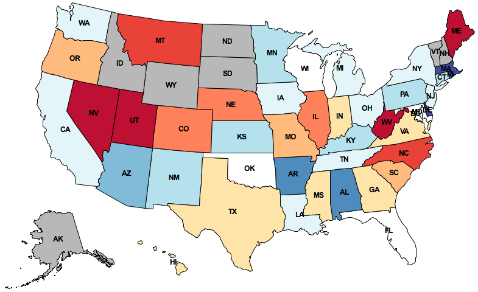

What do people tweet?
Draw their feelings on a map
to discover trends.
In this project, you will develop a geographic visualization of Twitter data across the USA. You will need to use dictionaries, lists, and data abstraction techniques to create a modular program. This project uses ideas from Sections 2.1-2.4 of the lecture notes.
The map displayed above depicts how the people in different states feel about Texas. This image is generated by:
The details of how to conduct each of these steps is contained within the project description. By the end of this project, you will be able to map the sentiment of any word or phrase. There are two alternative zip archives related to this project:
The project uses several files, but all of your changes will be made to the first one.
|
A starter implementation of the main project file. |
|
|
Geographic positions, 2-D projection equations, and geographic distance functions. |
|
|
Functions for drawing maps. |
|
|
Functions for loading Twitter data from files. |
|
|
A simple Python graphics library. |
|
|
Utility functions for 61A. |
The data directory contains all the data files needed for the project. The above zip archives contain this directory, but if you download the individual project files above, you will need to download the data directory as well.
This is a two-week project. You'll work in a team of two people, and you can complete all problems together with your partner.
Start early! Feel free to ask for help early and often. The course staff is here to assist you, but we can't help everyone an hour before the deadline. Piazza awaits. You are not alone!
In the end, you and your partner will submit one project. There are 19 possible
points (16 for correctness and 3 for composition). You only need to submit the
file trends.py. You do not need to modify any other files for this
project. To submit the project, change to the directory where the
trends.py file is located and run submit proj2.
In this phase, you will create an abstract data type for tweets, split the text of a tweet into words, and calculate the amount of positive or negative feeling in a tweet.
First, you will implement an abstract data type for Tweets. The constructor
make_tweet is defined at the top of trends.py.
make_tweet returns a Python dictionary with
the following entries:
text: a string, the text of the tweet, all in lowercase time: a datetime object, when the tweet was posted latitude: a floating-point number, the latitude of the tweet's location longitude: a floating-point number, the longitude of the tweet's location
Problem 1 (1 pt). Implement the tweet_words and
tweet_time selectors. Call extract_words to list the
words in the text of a tweet.
Problem 2 (1 pt). Implement the tweet_location selector,
which returns a position. Positions are another abstract data
type, defined at the top of geo.py. Make sure that you understand
how to manipulate positions; they play an important role in this project.
When you complete problems 1 and 2, the doctest for make_tweet
should pass.
python3 trends.py -t make_tweet
Problem 3 (1 pt). Improve the extract_words
function as follows: Assume that a word is any consecutive substring of
text that consists only of ASCII letters. The string
ascii_letters in the string module contains all
letters in the ASCII character set. The extract_words function
should list all such words in order and nothing else.
When you complete this problem, the doctest for extract_words
should pass.
python3 trends.py -t extract_words
Problem 4 (1 pt). Implement the sentiment abstract data type, which
represents a sentiment value that may or may not exist. The constructor
make_sentiment takes either a numeric value within the interval -1
to 1, or None to indicate that the value does not exist. Implement
the selectors has_sentiment and sentiment_value as
well. You may use any representation you choose, but the rest of your
program should not depend on this representation.
When you complete this problem, the doctests for make_sentiment
and get_word_sentiment should pass. You can also call the
print_sentiment function to print the sentiment values of all
sentiment-carrying words in a line of text.
python3 trends.py -t make_sentiment python3 trends.py -t get_word_sentiment python3 trends.py -p computer science is my favorite! python3 trends.py -p life without lambda: awful or awesome?
Problem 5 (1 pt). Implement analyze_tweet_sentiment,
which takes a tweet (of the abstract data type) and returns a
sentiment. Read the docstrings for
get_word_sentiment and analyze_tweet_sentiment to
understand how the two functions interact. Your implementation should not
depend on the representation of a sentiment!.
When you complete this problem, the doctests for
analyze_tweet_sentiment should pass.
python3 trends.py -t analyze_tweet_sentiment
You can also check your code for data abstraction violations by running the following command:
python3 trends.py -a analyze_tweet_sentiment
We will use the position abstract data type to represent geographic
latitude-longitude positions on the Earth. The data abstraction, defined at the
top of geo.py, has the constructor make_position and
the selectors latitude and longitude.
In this phase, you will write two functions that together determine the centers of U.S. states. The shape of a state is represented as a list of polygons. Some states (e.g. Hawaii) consist of multiple polygons, but most states (e.g. Colorado) consist of only one polygon (still represented as a length-one list).
Problem 6 (2 pt). Implement find_centroid, which takes a
polygon and returns three values: the coordinates of its centroid and its area.
The input polygon is represented as a list of position abstract
data types, which are the consecutive vertices of its perimeter. The first
vertex is always identical to the last.
The centroid of a two-dimensional shape is its center of balance, defined as
the intersection of all straight lines that evenly divide the shape into
equal-area halves. find_centroid returns the centroid and area of
an individual polygon.
The formula for computing the centroid of a polygon appears on Wikipedia. The formula relies on vertices being consecutive (either clockwise or counterclockwise; both give the same answer), a property that you may assume always holds for the input.
The area of a polygon is never negative. Depending on how you compute the
area, you may need to use the built-in abs function to return a
non-negative number.
When you complete this problem, the doctest for find_centroid
should pass.
python3 trends.py -t find_centroid
You can also check your code for data abstraction violations with the following command:
python3 trends.py -a find_centroid
Problem 7 (2 pt). Implement find_state_center, which takes a
state represented by a list of polygons and returns a position, its centroid.
The centroid of a collection of polygons can be computed by geometric decomposition. The centroid of a shape is the weighted average of the centroids of its component polygons, weighted by their area.
When you complete this problem, the doctest for find_state_center
should pass.
python3 trends.py -t find_state_center
You can also check your code for data abstraction violations with the following command
python3 trends.py -a find_state_center
Once you are finished, draw_centered_map will draw the
10 states closest to a given state (including that state).
python3 trends.py -d CA
The name us_states is bound to a dictionary containing the
shape of each U.S. state, keyed by its two-letter postal code. You can use
the keys of this dictionary to iterate over all the U.S. states.
In this phase, you will write functions to determine the state that a tweet is coming from, group tweets by state, and calculate the average positive or negative feeling in all the tweets associated with a state.
Problem 8 (1 pt). Implement find_closest_state, which
returns the two-letter postal code of the state that is closest to the location
of a tweet. Use the geo_distance function (provided in
geo.py) to calculate the shortest distance in miles between two
positions.
When you complete this problem, the doctests for
find_closest_state should pass.
python3 trends.py -t find_closest_state
Problem 9 (1 pt). Implement group_tweets_by_state, which
takes a sequence of tweets and returns a dictionary. The keys of the returned
dictionary are state names (two-letter postal codes), and the values are lists
of tweets that appear closer to that state's center than any other.
When you complete this problem, the doctests for
group_tweets_by_state should pass.
python3 trends.py -t group_tweets_by_state
Problem 10 (1 pt). As an exercise, implement
most_talkative_states, which returns a list of the top five states
with the largest number of tweets containing 'term' in descending order (from
most to least). The list should contain the 5 states in the form a two-element
tuple, with the first entry being the state, and the second entry being the
number of tweets i.e. ('CA', 23).
('CA', 4) should come
before ('ND', 4).
Hint: The following may prove useful.
dict.pop('key') removes the key and
its value pair from the dictionary dict
and returns value.del dict['key'] removes the a 'key'-'value' pair
from the dictionary dictsorted(dict) returns a list of keys in
dict in sorted order.
When you complete this problem, the doctests for
most_talkative_states should pass.
python3 trends.py -t most_talkative_states
Problem 11 (2 pt). Implement average_sentiments. This
function takes the dictionary returned by group_tweets_by_state
and also returns a dictionary. The keys of the returned dictionary are the
state names (two-letter postal codes), and the values are average sentiment
values for all the tweets that have sentiment value in that state.
If a state has no tweets with sentiment values, leave it out of the returned dictionary entirely. Do not include a state with no sentiment using a zero sentiment value. Zero represents neutral sentiment, not unknown sentiment. States with unknown sentiment will appear gray, while states with neutral sentiment will appear white.
You should now be able to draw maps that are colored by sentiment corresponding to tweets that contain a given term.
python3 trends.py -m sandwich python3 trends.py -m obama python3 trends.py -m texas python3 trends.py -m my lifeIf you downloaded the small version of the project, you will only be able to map these four terms. If you would like to map any term, you will need to download this Twitter data file and place it in the
data directory of your project.
In this last section, you will take into account the fourth dimension:
time. Each tweet has a datetime object, which represents the time
that the tweet was posted.
The provided draw_map_by_hour function visualizes the tweets
that were posted during each hour of the day. For example, "sandwich" tweets
appear most positive at 10:00pm: late night snack!
Problem 12 (2 pt). Implement group_tweets_by_hour. which
takes a sequence of tweets and returns a dictionary. The keys of the returned
dictionary are the integers 0 through 23, representing the 24 hours of the day.
The value for each key is a list of the tweets that were posted during that
hour.
To get started, read the online documentation
on datetime objects. When you are finished, you can visualize the
changing sandwich sentiments over time.
python3 trends.py -b sandwich
Congratulations! One more 61A project completed.
These extensions are optional and ungraded. In this class, you are welcome to program just for fun. If you build something interesting, come to office hours and give us a demo. However, please do not change the behavior or signature of the functions you have already implemented.
:-) and negative sentiment to sad ones.
find_containing_state that finds the state that
actually contains a tweet position.
graphics.py package supports animation. Use the
slide_shape method to have states and dots slide into place.
Acknowledgements: Aditi Muralidharan developed this project with John DeNero. Hamilton Nguyen extended it.